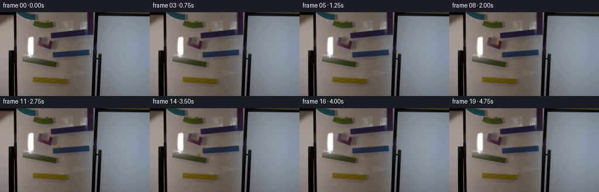
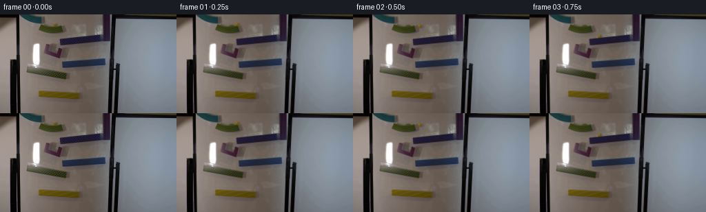
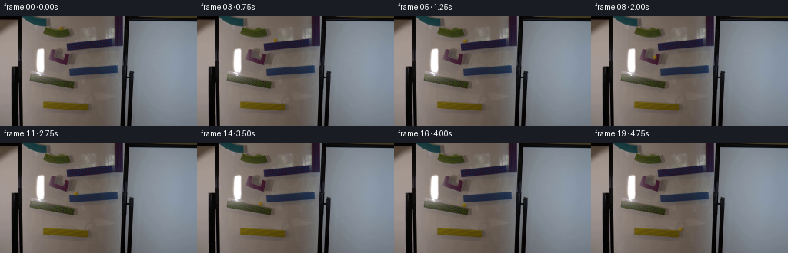
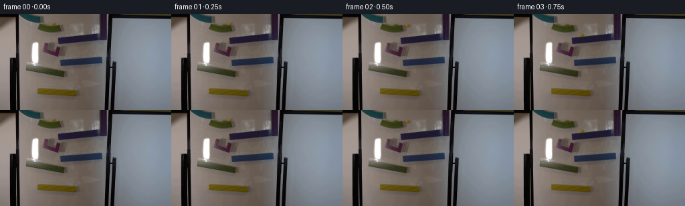
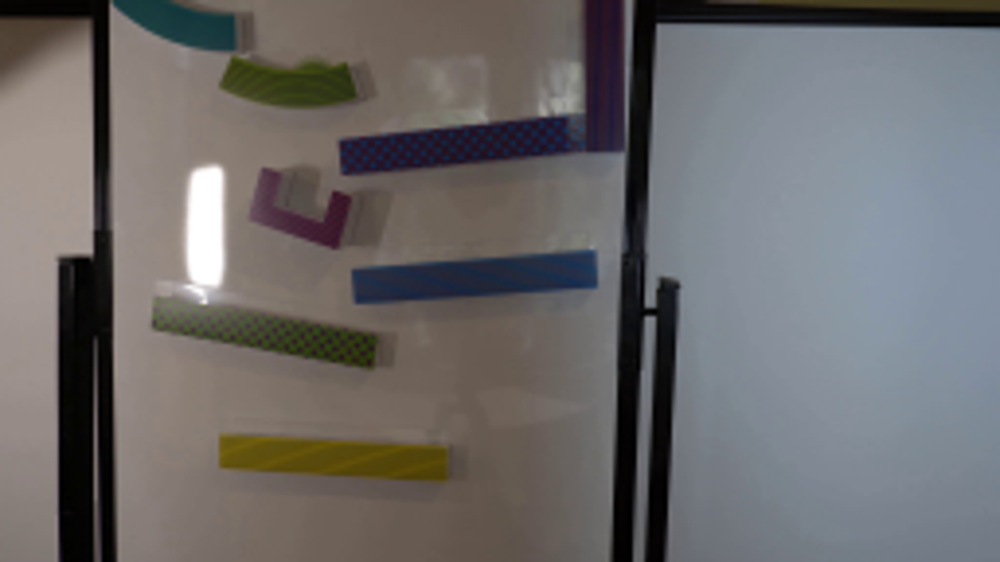
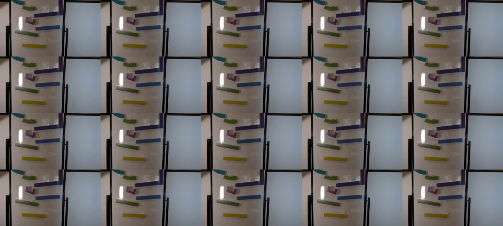

CODING AGENTS AS PIXEL WORLD MODELS
traex/GPT-6.1-Sol · 0105
点击播放 · 原生 RGB 像素
逐轮保存的候选
回放视频、检查图与代码变化。
每份候选均可单独播放。实际图片检查记录在下方工具轨迹中。
候选 01播放与检查图
点击播放 · 原生 RGB 像素


展开代码变化
--- 上一保存版本
+++ 本次保存版本
@@ -0,0 +1,174 @@
+from pathlib import Path
+import math
+import numpy as np
+from PIL import Image, ImageFilter
+import cv2
+from scipy.interpolate import CubicHermiteSpline
+import artifact_io
+
+ROOT = Path(__file__).resolve().parent
+IMAGE = np.asarray(Image.open(ROOT / 'first_frame.png').convert('RGB'))
+H, W = IMAGE.shape[:2]
+
+# Remove only the marble's original small silhouette, keeping the photographed
+# board, hardware, patterned ramps, and all their lighting completely stationary.
+yy, xx = np.mgrid[:H, :W]
+erase = (((xx-79.25)/5.0)**2 + ((yy-15.45)/3.9)**2 < 1) & (yy < 18)
+BACKGROUND = cv2.inpaint(IMAGE, erase.astype(np.uint8)*255, 3, cv2.INPAINT_TELEA)
+
+# Upper edges of the tracks in image coordinates. The marble travels in front
+# of the board and just behind the shallow front lips of each track.
+def green_top(x):
+ return 18.0 - .013*(x-77.0)**2
+
+def red_top(x):
+ return 35.0 - .098*(x-87)
+
+def blue_top(x):
+ return 69.4 - .092*(x-90)
+
+def lower_green_top(x):
+ return 75.4 + .158*(x-39)
+
+def yellow_top(x):
+ return 111.4 + .059*(x-56)
+
+R = 2.48
+G0, G1 = 0., .35
+R0, R1 = .66, 1.38
+P0, P1 = 1.67, 2.17
+B0, B1 = 2.56, 3.20
+L0, L1 = 3.46, 4.12
+Y0 = 4.53
+
+# The little U-shaped intermediate track turns the ball through its curved bed.
+pt = np.array([P0, 1.77, 1.87, 2.01, P1])
+pp = np.array([[75.1,50.35],[71.7,48.45],[75.0,51.9],
+ [83.0,53.4],[88.0,46.0]])
+pv = np.array([[-30.,-24.],[0.,6.],[48.,24.],[37.,-8.],[25.,-23.]])
+purple = CubicHermiteSpline(pt, pp, pv)
+
+def roll(t, t0, t1, x0, x1, edge, initial_velocity=0.):
+ dt = t-t0
+ duration = t1-t0
+ a = 2*(x1-x0-initial_velocity*duration)/duration**2
+ x = x0 + initial_velocity*dt + .5*a*dt**2
+ vx = initial_velocity+a*dt
+ eps=.01
+ slope=(edge(x+eps)-edge(x-eps))/(2*eps)
+ return np.array([x,edge(x)-R+.15]), np.array([vx,vx*slope]), edge
+
+def fly(t,t0,t1,p0,p1,vy0=0.):
+ duration=t1-t0
+ s=t-t0
+ vx=(p1[0]-p0[0])/duration
+ gravity=2*(p1[1]-p0[1]-vy0*duration)/duration**2
+ return np.array([p0[0]+vx*s,p0[1]+vy0*s+.5*gravity*s*s]),np.array([vx,vy0+gravity*s]),None
+
+GREEN_END=np.array([91.4,green_top(91.4)-R+.15])
+RED_START=np.array([101.2,red_top(101.2)-R+.15])
+RED_END=np.array([86.7,red_top(86.7)-R+.15])
+BLUE_START=np.array([98.8,blue_top(98.8)-R+.15])
+BLUE_END=np.array([89.8,blue_top(89.8)-R+.15])
+LOW_START=np.array([81.8,lower_green_top(81.8)-R+.15])
+LOW_END=np.array([96.,lower_green_top(96.)-R+.15])
+YELLOW_START=np.array([111.,yellow_top(111.)-R+.15])
+
+def trajectory(t):
+ if t <= G1:
+ # The ball is already poised in the top track in the supplied exposure.
+ s=t/G1
+ x=79.25+(91.4-79.25)*(s*.77+s*s*.23)
+ p=np.array([x,green_top(x)-R+.15])
+ p[1]+=(15.45-(green_top(79.25)-R+.15))*(1-s)
+ vx=(91.4-79.25)/G1*(.77+.46*s)
+ return p,np.array([vx,-.026*(x-77)*vx]),green_top
+ if t < R0:
+ return fly(t,G1,R0,GREEN_END,RED_START,-8.)
+ if t <= R1:
+ return roll(t,R0,R1,101.2,86.7,red_top,3.)
+ if t < P0:
+ return fly(t,R1,P0,RED_END,pp[0],4.)
+ if t <= P1:
+ return purple(t),purple(t,1),None
+ if t < B0:
+ return fly(t,P1,B0,pp[-1],BLUE_START,-23.)
+ if t <= B1:
+ return roll(t,B0,B1,98.8,89.8,blue_top,1.)
+ if t < L0:
+ return fly(t,B1,L0,BLUE_END,LOW_START,3.)
+ if t <= L1:
+ return roll(t,L0,L1,81.8,96.,lower_green_top,-3.)
+ if t < Y0:
+ return fly(t,L1,Y0,LOW_END,YELLOW_START,7.)
+ return roll(t,Y0,5.05,111.,123.3,yellow_top,21.)
+
+S = 4
+hy, hx = np.mgrid[:H*S,:W*S].astype(np.float32)
+hx=(hx+.5)/S-.5
+hy=(hy+.5)/S-.5
+BG = cv2.resize(BACKGROUND,(W*S,H*S),interpolation=cv2.INTER_CUBIC).astype(np.float32)
+
+
+def render(t):
+ p,v,edge = trajectory(t)
+ # A short finite exposure preserves natural blur while leaving the camera
+ # and every piece of the setup completely fixed.
+ samples=[]
+ for dt in [-.007,-.0035,0.,.0035,.007]:
+ p,v,edge=trajectory(max(0.,t+dt))
+ x,y=p
+ canvas=BG.copy()
+ # Soft cast shadow offset to the lower right on the whiteboard.
+ shadow=np.exp(-.5*(((hx-x-2.1)/2.25)**2+((hy-y-1.0)/1.8)**2))*.19
+ if edge is not None:
+ shadow *= np.clip((edge(hx)-hy+.2)*1.5,0,1)
+ canvas *= (1-shadow[...,None])
+ dx=(hx-x)/R
+ dy=(hy-y)/R
+ rr=dx*dx+dy*dy
+ z=np.sqrt(np.maximum(0,1-rr))
+ alpha=np.clip((1-np.sqrt(rr))*R*S+.5,0,1)
+ light=np.clip(-.44*dx-.49*dy+.74*z,0,1)
+ # Tinted translucent glass with a dark amber rim and a subdued reflected
+ # highlight: the source photograph is softly focused and dimly lit.
+ base=np.stack([91+44*light,68+39*light,9+11*light],axis=-1)
+ glass=.11*(1-z)
+ base=base*(1-glass[...,None])+canvas*glass[...,None]
+ inner=np.exp(-((dx-.27)**2+(dy-.35)**2)/.18)
+ base+=inner[...,None]*np.array([12.,11.,0.])
+ highlight=np.exp(-((dx+.35)**2+(dy+.43)**2)/.042)
+ base+=highlight[...,None]*np.array([35.,33.,25.])
+ if edge is not None:
+ # Very slight bottom-edge occlusion by the colored front lip.
+ alpha*=np.clip((edge(hx)-hy+.15)*S,0,1)
+ premult=base*alpha[...,None]
+ alpha=cv2.GaussianBlur(alpha,(0,0),.47*S)
+ premult=cv2.GaussianBlur(premult,(0,0),.47*S)
+ canvas=canvas*(1-alpha[...,None])+premult
+ samples.append(canvas)
+ out=np.mean(samples,axis=0)
+ out=cv2.resize(out,(W,H),interpolation=cv2.INTER_AREA)
+ # No resampling or re-encoding changes outside the localized moving object.
+ changed=np.max(np.abs(out-BACKGROUND.astype(np.float32)),axis=-1)>.25
+ result=BACKGROUND.copy()
+ result[changed]=np.clip(np.rint(out[changed]),0,255).astype(np.uint8)
+ return result
+
+
+def main():
+ frames=[IMAGE.copy()]
+ for i in range(1,20):
+ frames.append(render(i/4.))
+ frames=np.stack(frames).astype(np.uint8)
+ assert np.array_equal(frames[0],IMAGE)
+ artifact_io.save(frames,ROOT)
+ # An annotated enlarged contact sheet is only an intermediate inspection.
+ sheet=Image.new('RGB',(5*512,4*288),(0,0,0))
+ for i,im in enumerate(frames):
+ tile=Image.fromarray(im).resize((512,288),Image.Resampling.NEAREST)
+ sheet.paste(tile,((i%5)*512,(i//5)*288))
+ sheet.save(ROOT/'.tmp'/'all_frames.png')
+
+if __name__=='__main__':
+ main()
候选 02播放与检查图
点击播放 · 原生 RGB 像素


展开代码变化
--- 上一保存版本 +++ 本次保存版本 @@ -107,7 +107,7 @@ hy, hx = np.mgrid[:H*S,:W*S].astype(np.float32) hx=(hx+.5)/S-.5 hy=(hy+.5)/S-.5 -BG = cv2.resize(BACKGROUND,(W*S,H*S),interpolation=cv2.INTER_CUBIC).astype(np.float32) +BG = np.repeat(np.repeat(BACKGROUND,S,axis=0),S,axis=1).astype(np.float32) def render(t):
可观测工具轨迹
实际执行的命令与返回图片。
命令 1exit 0
/bin/bash -lc "ls -la && cat prompt.txt && printf '\\n--- RULES ---\\n' && cat GENERATION_RULES.md"
命令 2exit 0
/bin/bash -lc "cat artifact_io.py && python - <<'PY'
from PIL import Image
im=Image.open('first_frame.png'); print(im.size); im.resize((1024,576)).save('.tmp/enlarged.png')
PY"命令 3exit 0
/bin/bash -lc "python - <<'PY'
from PIL import Image
im=Image.open('first_frame.png');im.crop((50,7,99,31)).resize((980,480)).save('.tmp/top.png')
PY"命令 4exit 0
/bin/bash -lc "python - <<'PY'
from PIL import Image
import numpy as np
im=np.asarray(Image.open('first_frame.png'))
for y in range(10,21):
print(y,' '.join('%d,%d,%d'%tuple(im[y,x]) for x in range(74,85)))
PY"命令 5exit 0
/bin/bash -lc "python - <<'PY' import importlib.util for p in ['cv2','numpy','PIL','scipy']: print(p,bool(importlib.util.find_spec(p))) PY"
命令 6exit 0
/bin/bash -lc "python - <<'PY'
import cv2,numpy as np
from PIL import Image
im=np.asarray(Image.open('first_frame.png'))
y,x=np.mgrid[:144,:256]
m=((x-79.25)**2/5.1**2+(y-15.45)**2/3.7**2<1)&(y<18)
out=cv2.inpaint(im,m.astype('uint8')*255,3,cv2.INPAINT_TELEA)
Image.fromarray(out).resize((1024,576)).save('.tmp/clean_test.png')
Image.fromarray(out).save('.tmp/background_test.png')
PY"命令 7exit 0
/bin/bash -lc "cat > generate.py <<'PY'
from pathlib import Path
import math
import numpy as np
from PIL import Image, ImageFilter
import cv2
from scipy.interpolate import CubicHermiteSpline
import artifact_io
ROOT = Path(__file__).resolve().parent
IMAGE = np.asarray(Image.open(ROOT / 'first_frame.png').convert('RGB'))
H, W = IMAGE.shape[:2]
# Remove only the marble's original small silhouette, keeping the photographed
# board, hardware, patterned ramps, and all their lighting completely stationary.
yy, xx = np.mgrid[:H, :W]
erase = (((xx-79.25)/5.0)**2 + ((yy-15.45)/3.9)**2 < 1) & (yy < 18)
BACKGROUND = cv2.inpaint(IMAGE, erase.astype(np.uint8)*255, 3, cv2.INPAINT_TELEA)
# Upper edges of the tracks in image coordinates. The marble travels in front
# of the board and just behind the shallow front lips of each track.
def green_top(x):
return 18.0 - .013*(x-77.0)**2
def red_top(x):
return 35.0 - .098*(x-87)
def blue_top(x):
return 69.4 - .092*(x-90)
def lower_green_top(x):
return 75.4 + .158*(x-39)
def yellow_top(x):
return 111.4 + .059*(x-56)
R = 2.48
G0, G1 = 0., .35
R0, R1 = .66, 1.38
P0, P1 = 1.67, 2.17
B0, B1 = 2.56, 3.20
L0, L1 = 3.46, 4.12
Y0 = 4.53
# The little U-shaped intermediate track turns the ball through its curved bed.
pt = np.array([P0, 1.77, 1.87, 2.01, P1])
pp = np.array([[75.1,50.35],[71.7,48.45],[75.0,51.9],
[83.0,53.4],[88.0,46.0]])
pv = np.array([[-30.,-24.],[0.,6.],[48.,24.],[37.,-8.],[25.,-23.]])
purple = CubicHermiteSpline(pt, pp, pv)
def roll(t, t0, t1, x0, x1, edge, initial_velocity=0.):
dt = t-t0
duration = t1-t0
a = 2*(x1-x0-initial_velocity*duration)/duration**2
x = x0 + initial_velocity*dt + .5*a*dt**2
vx = initial_velocity+a*dt
eps=.01
slope=(edge(x+eps)-edge(x-eps))/(2*eps)
return np.array([x,edge(x)-R+.15]), np.array([vx,vx*slope]), edge
def fly(t,t0,t1,p0,p1,vy0=0.):
duration=t1-t0
s=t-t0
vx=(p1[0]-p0[0])/duration
gravity=2*(p1[1]-p0[1]-vy0*duration)/duration**2
return np.array([p0[0]+vx*s,p0[1]+vy0*s+.5*gravity*s*s]),np.array([vx,vy0+gravity*s]),None
GREEN_END=np.array([91.4,green_top(91.4)-R+.15])
RED_START=np.array([101.2,red_top(101.2)-R+.15])
RED_END=np.array([86.7,red_top(86.7)-R+.15])
BLUE_START=np.array([98.8,blue_top(98.8)-R+.15])
BLUE_END=np.array([89.8,blue_top(89.8)-R+.15])
LOW_START=np.array([81.8,lower_green_top(81.8)-R+.15])
LOW_END=np.array([96.,lower_green_top(96.)-R+.15])
YELLOW_START=np.array([111.,yellow_top(111.)-R+.15])
def trajectory(t):
if t <= G1:
# The ball is already poised in the top track in the supplied exposure.
s=t/G1
x=79.25+(91.4-79.25)*(s*.77+s*s*.23)
p=np.array([x,green_top(x)-R+.15])
p[1]+=(15.45-(green_top(79.25)-R+.15))*(1-s)
vx=(91.4-79.25)/G1*(.77+.46*s)
return p,np.array([vx,-.026*(x-77)*vx]),green_top
if t < R0:
return fly(t,G1,R0,GREEN_END,RED_START,-8.)
if t <= R1:
return roll(t,R0,R1,101.2,86.7,red_top,3.)
if t < P0:
return fly(t,R1,P0,RED_END,pp[0],4.)
if t <= P1:
return purple(t),purple(t,1),None
if t < B0:
return fly(t,P1,B0,pp[-1],BLUE_START,-23.)
if t <= B1:
return roll(t,B0,B1,98.8,89.8,blue_top,1.)
if t < L0:
return fly(t,B1,L0,BLUE_END,LOW_START,3.)
if t <= L1:
return roll(t,L0,L1,81.8,96.,lower_green_top,-3.)
if t < Y0:
return fly(t,L1,Y0,LOW_END,YELLOW_START,7.)
return roll(t,Y0,5.05,111.,123.3,yellow_top,21.)
S = 4
hy, hx = np.mgrid[:H*S,:W*S].astype(np.float32)
hx=(hx+.5)/S-.5
hy=(hy+.5)/S-.5
BG = cv2.resize(BACKGROUND,(W*S,H*S),interpolation=cv2.INTER_CUBIC).astype(np.float32)
def render(t):
p,v,edge = trajectory(t)
# A short finite exposure preserves natural blur while leaving the camera
# and every piece of the setup completely fixed.
samples=[]
for dt in [-.007,-.0035,0.,.0035,.007]:
p,v,edge=trajectory(max(0.,t+dt))
x,y=p
canvas=BG.copy()
# Soft cast shadow offset to the lower right on the whiteboard.
shadow=np.exp(-.5*(((hx-x-2.1)/2.25)**2+((hy-y-1.0)/1.8)**2))*.19
if edge is not None:
shadow *= np.clip((edge(hx)-hy+.2)*1.5,0,1)
canvas *= (1-shadow[...,None])
dx=(hx-x)/R
dy=(hy-y)/R
rr=dx*dx+dy*dy
z=np.sqrt(np.maximum(0,1-rr))
alpha=np.clip((1-np.sqrt(rr))*R*S+.5,0,1)
light=np.clip(-.44*dx-.49*dy+.74*z,0,1)
# Tinted translucent glass with a dark amber rim and a subdued reflected
# highlight: the source photograph is softly focused and dimly lit.
base=np.stack([91+44*light,68+39*light,9+11*light],axis=-1)
glass=.11*(1-z)
base=base*(1-glass[...,None])+canvas*glass[...,None]
inner=np.exp(-((dx-.27)**2+(dy-.35)**2)/.18)
base+=inner[...,None]*np.array([12.,11.,0.])
highlight=np.exp(-((dx+.35)**2+(dy+.43)**2)/.042)
base+=highlight[...,None]*np.array([35.,33.,25.])
if edge is not None:
# Very slight bottom-edge occlusion by the colored front lip.
alpha*=np.clip((edge(hx)-hy+.15)*S,0,1)
premult=base*alpha[...,None]
alpha=cv2.GaussianBlur(alpha,(0,0),.47*S)
premult=cv2.GaussianBlur(premult,(0,0),.47*S)
canvas=canvas*(1-alpha[...,None])+premult
samples.append(canvas)
out=np.mean(samples,axis=0)
out=cv2.resize(out,(W,H),interpolation=cv2.INTER_AREA)
# No resampling or re-encoding changes outside the localized moving object.
changed=np.max(np.abs(out-BACKGROUND.astype(np.float32)),axis=-1)>.25
result=BACKGROUND.copy()
result[changed]=np.clip(np.rint(out[changed]),0,255).astype(np.uint8)
return result
def main():
frames=[IMAGE.copy()]
for i in range(1,20):
frames.append(render(i/4.))
frames=np.stack(frames).astype(np.uint8)
assert np.array_equal(frames[0],IMAGE)
artifact_io.save(frames,ROOT)
# An annotated enlarged contact sheet is only an intermediate inspection.
sheet=Image.new('RGB',(5*512,4*288),(0,0,0))
for i,im in enumerate(frames):
tile=Image.fromarray(im).resize((512,288),Image.Resampling.NEAREST)
sheet.paste(tile,((i%5)*512,(i//5)*288))
sheet.save(ROOT/'.tmp'/'all_frames.png')
if __name__=='__main__':
main()
PY
python generate.py"命令 8exit 0
/bin/bash -lc "python - <<'PY'
import numpy as np
from PIL import Image
im=np.asarray(Image.open('frames/01.png')).astype(int)
bg=np.asarray(Image.open('.tmp/background_test.png')).astype(int)
d=np.max(abs(im-bg),axis=2)
print('changed pixels relative to base:',np.sum(d>0),'max',d.max(),'outside marble',np.sum(d[:,110:]>0))
PY"命令 9exit 0
/bin/bash -lc "python - <<'PY'
from PIL import Image
import numpy as np
im=np.asarray(Image.open('first_frame.png'))
for y in range(12,19): print(y,[(x,im[y,x].tolist()) for x in [72,73,74,84,85,86,87]])
PY"命令 10exit 0
/bin/bash -lc "python generate.py && python - <<'PY'
import numpy as np
from PIL import Image
import generate
im=np.asarray(Image.open('frames/01.png')).astype(int)
bg=generate.BACKGROUND.astype(int)
d=np.max(abs(im-bg),axis=2)
print('Number of changed pixels:',np.sum(d>0),'unrelated right-side changes:',np.sum(d[:,110:]>0))
a=np.load('pixels.npz')['pixels']
print('output tensor:',a.shape,a.dtype)
print('exact first frame:',np.array_equal(np.asarray(Image.open('frames/00.png')),generate.IMAGE))
PY"命令 11exit 0
/bin/bash -lc 'command -v ffmpeg || true; ls -lh pixels.npz index.html inspection.png generate.py'
视觉工具实际返回图片 1

视觉工具实际返回图片 2
视觉工具实际返回图片 3

视觉工具实际返回图片 4

保存候选 2 份；完成命令 11 次；可验证图片返回 4 张。原始 API 响应与完整日志保留在本地。